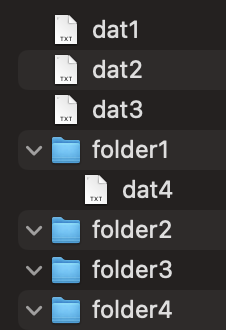

Potrebno je implementirati klasu FileVisitorWordCounterAndSorter koja implementira sučelje FileVisitor<Path> tako da obilazi zadani direktorij i njegove poddirektorije te izvršava sljedeće akcije:
FileVisitorWordCounterAndSorter u datotekama tipa .txt svakog direktorija. Ukupan broj ponavljanja tražene riječi u svim .txt datotekama određenog direktorija ispisuje na standardni izlaz u sljedećem formatu:
<lokacija_datoteke> = <ukupni_broj_ponavljanja>FileVisitorWordCounterAndSorter dodatno treba implementirati metodu public void copyToSortedFilesFolder(String sortedFilesFolderPath) kojom se sve pronađene .txt datoteke nakon izvršavanja metode Files.walkFileTree kopiraju u direktorij čija se putanja predaje kao argument, na način da sadržaj svake datoteke ostane isti kao i u izvornoj datoteci, ali je datoteke potrebno preimenovati tako da im naziv bude pripadajući redni broj veličine datoteke, tako da sve datoteke u tom direktoriju budu sortirane po njihovoj veličini. Tako će se najveća datoteka zvati 1.txt, druga najveća 2.txt, itd. Dodatno, pretpostavite da se ova metoda obavezno poziva, i to samo jednom nakon svakog poziva Files.walkFileTree metode.Riječ koja se pretražuje predaje se kao argument jedinom konstruktoru klase FileVisitorWordCounterAndSorter i postavlja se kao vrijednost privatnog atributa searchedWord. Potrebno osigurati da se njena vrijednost kasnije može dohvaćati i mijenjati. Ako odredišni direktorij predan kao argument metodi copyToSortedFilesFolder(String sortedFilesFolderPath) ne postoji, potrebno ga je stvoriti.
Primjer korištenja:
Ako se implementiranim FileVisitorom pretražuje direktorij koji ima sljedeću strukturu:

a pri kreiranju instance klase FileVisitorWordCounterAndSorter, konstruktoru je predana tražena riječ "prolaz" koja se u datotekama dat1.txt, dat2.txt, dat3.txt pojavljuje ukupno 7 puta, a u datoteci dat4.txt 0 puta, ispis na standardni izlaz treba izgledati ovako:
/res/oopIspit = 7
/res/oopIspit/folder1 = 0
Ako su u istom slučaju u veličine datoteka u sljedećem redoslijedu (poredano od najveće prema najmanjoj): dat3.txt, dat4.txt, dat2.txt, dat1.txt, onda se pozivanjem metode copyToSortedFilesFolder("/res/oopIspit/") u direktorij /res/oopIspit/ upisuje u datoteku 1.txt sadržaj datoteke dat3.txt, u datoteku 2.txt sadržaj datoteke dat4.txt, itd.
Dodatna napomena:
File, već samo Path i java.nio paket.hr.fer.oop.